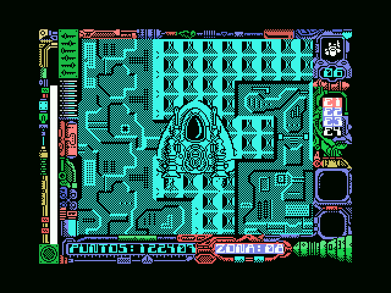
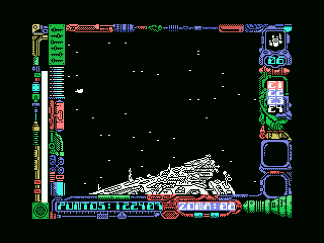
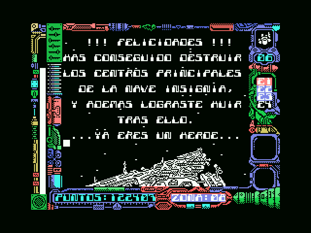
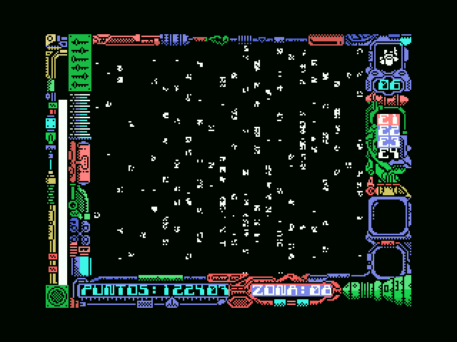
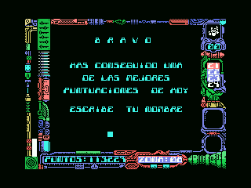

Hallazgos
Que Stardust es una conversión del ZX Spectrum ya se sabía. Lo que no se esperaba al abrir la cinta es hasta dónde llega esa conversión: no se limitaron a traer los gráficos y rehacer el resto, se trajeron el sistema de grabación entero, la rutina de carga y hasta la forma de dibujar en pantalla. Lo que sigue es lo que fue apareciendo al desmontarla, cada cosa con la prueba que la sostiene detrás, agrupado por temas: la conversión, la carga, los dos motores, el oficio de dibujar, el mundo y sus criaturas, el sonido, y el final.
Quién hizo esta versión
Los propios autores de la versión de ZX Spectrum avisan en su repositorio de que la de MSX la hizo otra gente. Y el juego contesta él solo, en su pantalla de créditos, en 0xF124:
CONVERSION POR
CARLOS ARIAS
GRAFICOS
JUAN CARLOS Y JAVIER AREVALO
...ADEMAS DE...
JULIO MARTIN
MUSICA COMPUESTA POR
GOMINOLAS
BASADO EN
UNA IDEA ORIGINAL
JOSE MANUEL MU&OZ
TOPO SOFTLa conversión es de Carlos Arias, y los gráficos siguen siendo de los hermanos Arévalo, los mismos de la versión original — lo que encaja con que el dibujo se trajera tal cual, sin retocar.
Una conversión hasta los huesos
Lo primero que se ve al mirar de cerca es cuánto de esta cinta no es de MSX en realidad, sino del Spectrum del que viene.
La cinta no es una cinta de MSX
Un juego de MSX se graba en bloques KCS, que es el formato del sistema: los escribe la propia BIOS y los lee la propia BIOS, y así lo hacen los demás títulos de Topo Soft para esta máquina.
Stardust no. Sus cuatro bloques de datos son bloques del ZX Spectrum, con la estructura de allí: un byte de bandera, los datos, y un byte final que es el XOR de todo lo anterior. Los cuatro traen ese checksum correcto — comprobado uno por uno —, y es la única verificación de integridad que lleva la cinta.
La lleva la cinta, eso sí, pero nadie la mira: la rutina de carga calcula el XOR y sale con el acarreo diciendo si cuadra, y las dos llamadas que hay (0x4018 y 0x403D) siguen adelante sin comprobarlo. No hay reintento ni aviso de error: si la cinta se lee mal, el juego arranca igual.
Y el cargador tampoco es nativo: es una reimplementación de LD-BYTES, la rutina de carga de la ROM del Spectrum, con el mismo interfaz de registros:
ld ix,047a0h ; IX = donde va
ld de,0b647h ; DE = cuantos bytes
ld a,000h ; A = la bandera que se espera
scf ; carry activado = cargar, no verificar
call 0405chCualquiera que haya programado un Spectrum reconoce esa llamada: es la de 0x0556 de su ROM, parámetro por parámetro.
Los 48K planos que el Spectrum tiene y el MSX no
Antes de cargar nada, el cargador hace algo que en un juego de MSX normal sobraría: busca RAM y la mapea en las páginas 1 y 2.
ld hl,04000h / call sub_d30fh
ld hl,08000h / call sub_d30fhLa rutina de 0xD30F va probando a escribir en cada ranura con ENASLT (la llamada 0x0024 de la BIOS) hasta dar con RAM de verdad. ¿Por qué hace falta? Porque el Spectrum tiene 48K planos de RAM y el MSX no: aquí la mitad baja de la memoria la ocupa la ROM del BASIC, así que para que el juego portado encuentre la memoria justo donde la espera hay que quitar antes esa ROM de en medio.
La segunda carga trae LD-BYTES del Spectrum otra vez
Ya hemos visto que el cargador reimplementa LD-BYTES, la rutina con la que la ROM del Spectrum lee de cinta. Pues la rutina con la que el propio juego se carga a sí mismo la segunda parte no es una copia de aquella — se buscó su firma byte a byte en toda la cinta y no aparece por ningún lado — pero viene del mismo sitio, y lo lleva escrito en sus constantes: tres números, cada uno en su sitio y en el mismo orden que en el original.
0x16 el retardo de LD-EDGE-1
0x0415 la espera de LD-START
0x9C y 0xC6 los umbrales con que LD-LEADER reconoce el tono guía
midiendo cuánto dura el pulsoHasta el reparto en dos rutinas es el mismo: una llama a la otra y vuelve si falla, que es justo lo que hacen LD-EDGE-2 y LD-EDGE-1 en el original. Lo único que sí se portó de verdad fue la lectura del bit, porque el Spectrum la hace por in a,(0feh) y aquí hay que ir por el registro 14 del PSG.
Y de propina viene el espectáculo: en cada flanco leído, la rutina le mete al color del borde el registro de refresco enmascarado (ld a,r / and 00fh), que es exactamente esas rayas de colores que hace el Spectrum mientras carga, montadas sobre el único sitio donde el MSX tiene un color de borde.
Que quede claro de qué tipo es esta prueba: es una identificación por estructura y por constantes, no un diff, porque en el repositorio no hay ninguna ROM del Spectrum con la que cotejar byte a byte. Con tres números tan concretos cayendo cada uno en su sitio es difícil que sea casualidad, pero mejor decir de qué pie cojea la evidencia.
Las explosiones llevan un fósil del Spectrum dentro
Las dos fases tienen su explosión de partículas, cada una con su propia copia del código. La de naves —cuando derriban al protagonista— siembra 64 partículas en la posición de la nave y las mueve con gravedad: la velocidad vertical crece un punto por cuadro, y cada partícula es un simple píxel dibujado sobre el buffer. La del final feliz —la nave insignia vista desde fuera— son 200 partículas de metralla que se sesgan hacia arriba, sin gravedad esta vez.
Y en las dos, escondido dentro del bucle que pinta cada partícula, está esto:
c663: and 018h / out (0feh),a0xFE es el puerto del borde del ZX Spectrum. En el original, cada partícula hacía parpadear el borde de la pantalla; aquí, en el MSX, ese puerto no hace absolutamente nada, y la instrucción sigue ahí igualmente, ejecutándose en balde en cada partícula desde 1987. Las dos copias del efecto arrastran el mismo resto fósil, y es la prueba más limpia que ha dado el proyecto de que estas rutinas se trajeron del original tal cual, sin que nadie las revisara.
De paso: el azar de las partículas —y el del campo de 48 estrellas del fondo de naves, que en realidad son alturas aleatorias pintadas con el mismo patrón fijo 0x18— sale de un generador que lee la ROM de la BIOS como si fuera una tabla de entropía. Y el POKE de inmortalidad de la revista Input MSX, el que parchea 0xC06E, actúa justo en el despachador que decide si la nave está viva o explotando: la inmortalidad consiste, literalmente, en no dejar que se llame nunca al sistema de partículas.
Un despiste del alta de enemigos, heredado instrucción a instrucción
La rutina de 0xD41A calcula la dificultad con rrca, que rota en vez de desplazar. Y como 7 − zona sale impar justo en las zonas pares, ahí el bit bajo se le cuela al bit 7, la máscara se satura en 0xFF, y la probabilidad de que entre un enemigo por esa vía cae a una entre 256. La progresión solo queda limpia en las zonas impares —1/8, 1/4, 1/2— y en la zona 7 el enemigo entra directamente, sin tirar los dados.
Y no es cosa de la conversión: viene de fábrica. Cotejada contra el desensamblado que publicaron los propios autores del ZX Spectrum, la rutina equivalente está en $D4CF y trae la misma secuencia —LD A,$07 / SUB B / RRCA / ADD A,E—, con 52 de los 68 bytes idénticos y ni un solo opcode distinto: lo único que cambia son los 16 bytes de operandos de dirección. El rrca estaba ahí desde 1987, y el port lo copió instrucción a instrucción, sin tocarlo.
Y en partida ocurre exactamente eso. Poniendo el emulador a mirar el add a,e de 0xD436 —justo después del rrca, con la zona al lado— sobre el tramo de la partida grabada en que manda el juego de naves, las 206 veces que se ejecuta dan esta tabla y ninguna otra:
zona 2 A=0x82 zona 3 A=0x02
zona 4 A=0x81 zona 5 A=0x01
zona 6 A=0x80 zona 7 A=0x00Las tres zonas pares que se llegaron a jugar traen el bit 7 puesto, así que la máscara se satura de verdad; las impares dan la progresión limpia. Y la zona 7 sale con 0x00, que es justo el caso en que el enemigo entra sin tirar nada. Conviene matizarlo, eso sí: esas tablas tienen otra vía de alta, por los tiles del mapa, que no mira la zona y suaviza el efecto.
Lo que no se puede afirmar es la intención de quien lo escribió. Que se quisiera un desplazamiento en vez de una rotación lo sugiere todo —el juego usa srl para dividir en los dos bloques, y rra está a un solo bit de rrca— pero nadie puede leer la cabeza de aquel programador, y los propios autores dejaron esa rutina sin comentar.
La carga, y lo que lleva dentro
El cargador da para varios hallazgos él solo, y el juego además esconde otro cargador dentro.
El cargador trae una puerta trasera para trainers
Y esta es la mejor de todas. Antes de arrancar el juego, el cargador copia 94 bytes desde 0xDAC0 a 0xFDE8 —memoria alta, donde nada los va a machacar— y luego les echa un vistazo:
4040: ld hl,0fde8h / ld b,003h
4045: ld a,(hl) / cp 0c9h / jp nz,0bd85h ; ¿tres 0xC9 de firma?
404e: ld b,(hl) ; B = cuantos parches
4050: ld e,(hl) / ld d,(hl) / ld a,(hl) ; direccion y valor
4056: ld (de),a / djnz 4050 ; aplicarlos
4059: jp 0bd85h ; y ahora si, al juegoSi esos 94 bytes empiezan por tres 0xC9, el cargador los toma por una lista de parches y los aplica sobre el juego que acaba de cargar. O sea que el propio cargador comercial trae de fábrica un aplicador de POKEs.
Y la cuenta cuadra sola: tres bytes de firma, uno de contador, y treinta parches de tres bytes cada uno, noventa y cuatro en total. Está pensado para treinta pokes exactos.
Eso explica, de paso, por qué los cargadores de las revistas de la época funcionaban tan bien con este juego en concreto. El de Input MSX número 19 escribe con FOR I=56000 TO 56012, y 56000 es precisamente 0xDAC0: el buzón. Sus tres parches, leídos del binario antes de aplicarlos:
0xC06E/6F: 38 1F (jr c,+31) -> 18 EC (jr -20)
0xF7B1: 01 -> 00El segundo cambia el 1 de un ld a,001h por un 0. Aplicados por el propio cargador del juego, la nave aguantó dieciséis minutos seguidos sin morir.
Y el primero salta a una rutina que el juego trae de fábrica y no usa
El desplazamiento de ese parche es EC, o sea −20: el salto no se salta nada por delante, va hacia atrás, a 0xC070 − 20 = 0xC05C.
Y en 0xC05C hay siete bytes que no son relleno, aunque lo parezcan:
c05c: ld a,003h ; el escudo
c05e: ld (0c188h),a ; a tres
c061: jr 0c08fh ; y a seguir con la nave, como si nadaO sea que la inmortalidad no consiste en esquivar la explosión: consiste en que el escudo se recarga a tres en cada cuadro, antes de que al juego le dé tiempo a gastarlo.
Y lo llamativo de verdad es de quién es esa rutina. Está en la cinta, y en el juego tal como se vende no la llama absolutamente nadie: su dirección no aparece ni una sola vez entre los 46.663 bytes del bloque, y ningún salto relativo aterriza en ella. Siete bytes que hacen exactamente lo que haría falta para no morir nunca, colocados a veinte bytes justos del salto que hay que parchear para llegar hasta ellos.
Que la dejaran ahí los propios autores, como un interruptor de pruebas, es lo que parece — pero eso es una suposición, y así queda dicha. Lo que sí está medido es el comportamiento, y por partida doble: en el muestreo de la sesión larga, jugada con el trainer puesto, esas tres instrucciones aparecen 28, 13 y 33 veces y el sembrador de partículas de la explosión ninguna; en una partida jugada a mano sin trainer, es al revés, 0xC05C no aparece nunca y la explosión sí.
Cómo pide el juego la segunda parte
Al superar la última zona de naves sale una pantalla que dice
FELICIDADES
HAS CONSEGUIDO PENETRAR LAS DEFENSAS DE LA NAVE INSIGNIA
PERO LO PEOR AUN NO HA LLEGADOy el juego vuelve a la cinta a por la segunda parte, la de a pie.
Lo interesante es cómo lo hace. La rutina de carga del cargador sigue viva toda la partida en la página 1 —el juego se carga a partir de 0x47A0 y no la pisa— así que lo lógico sería que la llamara. Pues no: el juego trae la suya propia, y resulta ser un segundo port de la LD-BYTES del Spectrum, la misma que el cargador de cinta ya había reimplementado por su cuenta:
f7f6: ld hl,0f89fh / push hl ; empuja a mano la direccion de vuelta
f7fb: ld a,008h / out (0abh),a ; enciende el MOTOR de la cinta
f7ff: ld a,00eh / out (0a0h),a ; registro 14 del PSG, el del bit de cinta
f804: inc d / ex af,af' / dec d / di ; LD-BYTES, instruccion a instruccion
f808: ld a,005h ... ld hl,00415h ; y hasta su constante, 0x0415
f848: ld (ix+000h),l ; cada byte leido, guardado a traves de IX
f887: in a,(0a2h) / cpl / xor c ; lee el bit de cinta por el PSG
f893: ld a,r / and 00fh / out (099h),a ; y parpadea el borde, por el VDP
; donde el Spectrum usaba un puertoY tampoco es una copia de la del cargador: se buscó su firma byte a byte en toda la cinta y no aparece.
¿Cómo se zanjó esto? Partiendo de un savestate cogido justo en la pantalla de FELICIDADES y muestreando el contador de programa cada dos milisegundos durante toda la carga: 84.441 muestras, todas y cada una dentro de 0xF7F6-0xF89E, ni una en la ROM, ni una en la página 1. Mientras tanto IX —el puntero por el que guarda ese ld (ix+000h),l— recorre de 0x61D0 a 0xD674, que es exactamente el último byte de un bloque de 29.861. Ahí no pinta nada ni la BIOS ni el cargador.
Lo que queda en memoria después coincide con el bloque de la cinta al 99,78 %: solo 66 bytes de 29.861 son distintos, repartidos en treinta rachas cortas, y son las variables que la segunda parte ya había escrito cuando se hizo el volcado — entre ellas los tres estados de canal de sonido, de 46 bytes cada uno, en 0xD068, 0xD096 y 0xD0C4.
Y si reproduces una partida grabada, un punto de interrupción en 0xF7F6 no salta nunca: la grabación empieza con el cargador ya en marcha —su primer fotograma tiene el contador de programa en 0xF849, dentro de la rutina—, así que la entrada no tiene nada que cazar. El 0xF89F que aparece en la pila lo pone el push hl de 0xF7F9.
Por qué la segunda parte carga justo en 0x61D0
La dirección de carga del bloque de la fase de a pie no tiene nada de arbitrario: la fija la fuente de letras. Los dos rotuladores de esa fase —el del rótulo DEMO y el menú, que pinta a doble altura con el damero, y el del marco, que escribe directo a la memoria de vídeo— usan la misma fuente ASCII, indexada como 0x5F00 + código×8. Esa fuente la deja cargada el bloque de naves, y la fase de a pie simplemente la reutiliza.
La cuenta cierra sola: el último carácter que la fuente necesita es la Y (código 89), y 0x5F00 + 90×8 da exactamente 0x61D0. El bloque de la segunda parte carga en el primer byte libre justo después del glifo de la Y, ni uno antes, para no comerse la fuente heredada.
Dónde empieza a ejecutarse la segunda parte
0x61D0 es solo donde el bloque se carga. El programa empieza a ejecutarse en 0xA279, y hasta ahí lleva el propio cargador, en cuanto la carga de cinta termina bien:
f7b0: ld a,001h / ld (0a529h),a
f7b5: jp 0a279h <- aquí empieza la segunda parteY 0xA279 es un arranque de programa de manual: corta las interrupciones, se monta su propia pila con ld sp,05b32h, programa el chip gráfico y escribe JP 0xC46E en 0xFD9F, que es H.TIMI, el gancho de interrupción del MSX. Esa misma dirección, 0xC46E, ya se había identificado por separado, mirando la forma de su epílogo: dos caminos independientes que llegan al mismo sitio.
Dos motores, una misma biblioteca
Las dos mitades del juego no comparten motor, pero sí las herramientas.
Dos motores distintos en una cinta
Las dos partes del juego no comparten motor, y eso se nota sobre todo en cómo llevan a sus criaturas. En la parte de naves, cada entidad apunta en su propia estructura de 8 bytes la rutina que la gobierna, y el juego salta ahí con un jp (hl). Capturando esos saltos con el juego en marcha, los IX van de 8 en 8: 0xCB3A, 0xCB42, 0xC8D8, 0xC8E0...
Y ese jp (hl) es en realidad una llamada disfrazada, no un salto, porque el Z80 no tiene call (hl). Lo que hace el juego es empujar la vuelta a mano:
ld hl,0cb9dh <- la direccion de retorno
push hl <- a la pila, como haria un CALL
ld l,(ix+003h)
ld h,(ix+004h)
jp (hl) <- y al comportamiento del objetoEl ret con que termine ese comportamiento cae en 0xCB9D, que es la instrucción siguiente: un call indirecto montado a base de dos instrucciones sueltas.
Y hay un detalle todavía más fino. Cuando un objeto no tiene nada que hacer, en vez de guardar un puntero nulo y andar comprobándolo cada vez, se le instala directamente la dirección de un ret que ya existe en el código (0xD959). Así el bucle no necesita preguntar nada: llama siempre, y el que no hace nada vuelve enseguida.
La parte de a pie no trata así a sus enemigos. Viven en tablas de 5 bytes por objeto —los andantes en 0xACE4, cuatro como máximo; los voladores en 0xACF9; los dos tiros de la torreta en 0xAD04— y no llevan rutina apuntada: los mueven bucles fijos, uno por especie.
Y lo que despacha el jp (hl) de 0xC544 no son enemigos, para nada: son los tres canales del intérprete de sonido.
Lo dice el propio código, de la forma más simple posible. La rutina que arranca un sonido recibe el número de canal, lo multiplica por 46 y le suma una base para llegar al estado de ese canal. Las dos partes del juego llevan la misma rutina para eso, idéntica salvo la base:
naves and 07fh / ld de,0002eh / call ... / ld de,0ed75h
a pie and 07fh / ld de,0002eh / call ... / ld de,0d068hY 0xD068 es exactamente donde caían los IX del misterio. La cuenta cierra por los dos lados: tres canales de 46 bytes contados desde 0xED75 terminan en 0xEDFF, que es justo la dirección que el código carga para las variables del intérprete.
Así que ese jp (hl) nunca despachó entidades: despachaba comandos de música. Es el mismo intérprete en las dos partes, con sus mismos tres canales.
Lo que sí comparten de verdad es el oficio de dibujar. Es la técnica del Spectrum, que no tiene sprites por hardware: se desplaza el dibujo bit a bit con una tira desenrollada de adc hl,hl, se abre hueco con AND y se pinta con OR.
Y si emparejas bien la tira del dibujo de una mitad con la del dibujo de la otra —no con la de la máscara, que es la otra mitad de la misma rutina— salen 26 bytes iguales de 28, y la única diferencia es el operando de un salto.
Y no son solo los sprites: comparten una biblioteca entera
El resto de rutinas de servicio no es que se parezcan: son las mismas rutinas, copiadas y reubicadas de un sitio a otro. Cinco son idénticas byte a byte:
buffer_dir 0xC541 / 0xAACD 18 de 18 bytes
solapa_eje 0xCD7A / 0xAEC2 12 de 12
hay_tecla 0xF660 / 0xD30B 16 de 16
mul_a_de 0xE591 / 0xC8A6 21 de 21
vram_pon_dir 0xEE24 / 0xD117 16 de 16Y en las demás, lo que convierte el parecido en prueba es dónde caen las diferencias: en parejas de bytes consecutivos, que es justo lo que mide un operando de 16 bits. El pintor de sprites mide 198 bytes y difieren 21: veinte son diez direcciones —el pozo de sprites, el contador de filas, los dos jr con los que la rutina se parchea a sí misma, la llamada a buffer_dir, los dos saltos con que los atajos pasan por encima de las tiras y el que cierra el bucle de filas— y el veintiuno es un byte suelto, el del recorte por abajo: 0x50 en la fase de naves y 0x4F en la de a pie. De toda la rutina, eso es lo único que cambia de verdad. El rotulador, 144 bytes, da el mismo cuadro: 13 diferencias, seis direcciones y otra vez ese byte.
En borra_buffer las cuatro diferencias son que el di va antes del ld hl,0 / add hl,sp en una parte y después en la otra. En el generador de azar, las cuatro son la dirección de la semilla, que sale repetida dos veces.
Contado en bruto, buscando tramos idénticos de 32 bytes o más entre los dos bloques salen 58 tramos y 5867 bytes, de los cuales 1200 caen en zona de código. Y esa cifra se queda corta a propósito, porque cada dirección distinta parte el tramo en dos.
También hay diferencias que no son de reubicación, sino de decisión de diseño. gira_rumbo existe en las dos partes y hace lo mismo —acercar el rumbo actual al pedido un octavo cada vez, por el lado más corto— pero a la de a pie le falta el trozo que consulta un contador de espera metido en los bits 3 y 4 antes de aplicar el giro. Por eso la nave tarda unos cuadros en tumbarse de una inclinación a la siguiente, y el protagonista de a pie cambia de dirección al instante.
Con esto se puede afinar la frase de más arriba: los dos motores de juego son distintos, pero la biblioteca de servicio es exactamente la misma.
Cómo se coloca un dibujo entre dos bytes: cuatro escaleras
La memoria de vídeo va por bytes, de ocho píxeles en ocho. Para poner una nave en la columna 173 hay que correr el dibujo dentro del byte, y eso, en un Z80, cuesta caro. La solución que trae el juego es la de la casa: una tira de instrucciones de desplazamiento escritas una detrás de otra, en la que se entra a la altura exacta que hace falta. El pintor coge los tres bits bajos de la X y se escribe él mismo el salto:
c494: ld a,l / and 007h / jr z,... la columna cae justa
c499: dec a / ld c,a / add a,a / add a,c / add a,007h (n−1)·3 + 7
c49f: ld (0c4c4h),a / ld (0c4fbh),a se parchea los dos `jr`El 3 es lo que ocupa un peldaño (adc hl,hl son dos bytes y adc a,a uno), y el 7 es lo que ocupa el atajo que va delante. Así el salto aterriza en el peldaño que toca, y quedan exactamente los pasos que hacen falta y ni uno más.
Y los pasos van al revés de lo que uno diría a primera vista: para correr el dibujo n píxeles a la derecha se dan 8−n pasos a la izquierda sobre una ventana de tres bytes, porque lo que se sale por arriba es justo lo que tiene que aparecer en el byte de al lado. Con n=0 harían falta los ocho pasos completos, y esos ocho salen gratis con solo cambiar registros de sitio: ahí está el atajo.
Mirado de cerca, la tira no desplaza, rota. A, H y L giran juntos como si fueran un solo número de 24 bits, y funciona como desplazamiento porque lo que da la vuelta son justamente los bits del relleno. Y el relleno es lo único que distingue las dos tiras que tiene cada pintor:
máscara entra con A=0xFF y `scf` → rellena de UNOS (deja ver el fondo)
dibujo entra con `xor a` → rellena de CEROS (no pinta de más)Por eso son el mismo código repetido dos veces, y no una rutina llamada dos veces: cada copia desemboca en un sitio distinto —la que estampa con AND y la que estampa con OR— y todo esto vive dentro de un bucle de dieciséis filas, donde una llamada de verdad con su retorno se pagaría treinta y dos veces por cada sprite.
Hay cuatro escaleras en total, dos por pintor —el de sprites trabaja a 24 bits y el de letras a 16—, y las cuatro están presentes en las dos mitades del juego, iguales byte a byte salvo el destino de un salto:
máscara 24 bits 0xC4C5 / 0xAA51 26 de 28 bytes
dibujo 24 bits 0xC4FC / 0xAA88 26 de 28
máscara 16 bits 0xC590 / 0xAB1C 18 de 20
dibujo 16 bits 0xC5B5 / 0xAB41 18 de 20La escalera del rotulador empieza seis bytes antes de lo declarado
En el rotulador, la cuenta del parche es n·2 + 4 en vez de (n−1)·3 + 7, porque sus peldaños son de dos bytes y su atajo de seis (es la misma fórmula escrita de otra manera: n·2 + 4 es lo mismo que (n−1)·2 + 6). Y escrita así dice dónde empieza la tira: con n=1 el salto va a 0xC5B5 + 6 = 0xC5BB.
Y en 0xC5BB hay una tira, no relleno. Los seis bytes de delante de su cuarto peldaño —ed 6a repetido tres veces— son la escalera empezando, y con ellos tiene los mismos siete peldaños que las otras tres.
Verlo exige cruzar dos cosas que ninguna herramienta cruza sola: el volcado del contador de programa, que trae esos tres peldaños con 40, 155 y 226 muestras —más que muchas direcciones ya declaradas—, y los rangos que están declarados como datos. El guardián que existe cruza las zonas de datos contra el trazado, pero el trazador tampoco llega hasta esta escalera; el cruce hay que hacerlo a mano.
Y ese cruce saca dos rangos más, los dos código: los siete bytes donde aterriza el POKE de la revista —contados más arriba— y ocho bytes más en 0xE03D, que resultan ser un comportamiento de objeto instalado como puntero desde dos sitios del propio bloque. Quince bytes que estaban en la columna que no tocaba.
El oficio de dibujar en un MSX
Lo que hubo que inventar para dibujar un juego de Spectrum en una máquina que guarda la pantalla detrás de un puerto.
Lo que el MSX obligó a cambiar
Hay una diferencia de fondo entre las dos máquinas que la conversión no pudo esquivar de ninguna manera. El Spectrum escribe directamente en su memoria de pantalla, que es RAM normal en 0x4000. En el MSX, la memoria de vídeo está detrás del chip gráfico y no se puede direccionar: hay que enviarla byte a byte por un puerto.
Por eso esta versión lleva algo que el original no necesita: un buffer de pantalla en RAM, con una rutina que se encarga de volcarlo. El buffer va de 0x4000 a 0x4EFF, 3.840 bytes, de 24 de ancho por 160 de alto, y el volcado lo pasa a la VRAM en tres bandas —0x4000 con 56 filas, 0x4540 con 64 y 0x4B40 con 40— una por cada llamada de la rutina, cada una a su tercio del SCREEN 2. Lo dice el código, con sus tres llamadas contiguas desde 0xF3DC, y lo confirma el emulador: esa rutina llegó a hacer 3.252.480 escrituras, con el puntero recorriendo exactamente 0x4000-0x4EFF.
Y los ejes son fáciles de leer al revés, con lo que eso arrastra si se hace mal: el ld b,028h del volcado parece decir «40 columnas», pero es el bucle interior, y recorre el buffer a saltos de 24 — o sea que en realidad recoge 40 bytes de una misma columna. Quien de verdad cuenta columnas es el bucle exterior, ld c,018h, que avanza de uno en uno 24 veces.
Lo confirma dibujarlo: partido de 24 en 24 sale la tabla de récords legible; de 40 en 40, ruido puro. Y encaja con lo que se ve jugando: 24 bytes son 192 píxeles, más estrecho que la pantalla —por eso el marco de los lados nunca se mueve— y lo que sobra está a lo alto, que es justo por donde scrollea.
Un solo plano, y por qué parece que hay dos
Quien jugó a esto recuerda dos pisos moviéndose a velocidades distintas, con esa sensación de profundidad tan característica. Así que se buscó en serio: vigilando qué rutina escribe en cada banda del buffer, y levantando cuadro a cuadro la tabla de qué fila se dibujó desde qué dirección, que permite medir el desplazamiento comparando números exactos en vez de imágenes a ojo.
Y el resultado es rotundo: el fondo es un solo plano. En cuatro medidas distintas —tres momentos de la fase de a pie y uno de la de naves— las dieciocho tiras del buffer, tres bandas por seis columnas, se desplazan todas igual: +2 filas por cuadro andando, 0 paradas, −2 hacia atrás, con el 100 % de acierto y sin ningún desplazamiento horizontal.
La profundidad está en otro sitio: en el orden de dibujo. Numerando cada escritura al buffer dentro de un mismo cuadro, en la fase de naves sale siempre la misma secuencia: primero el fondo entero, después los sprites, y después de los sprites todavía una rutina más (0xC77A) que pinta columnas del decorado leyendo de su propio almacén de tiles. Y se le vio hacerlo en directo: un pilar bajando, la nave subiendo hacia él, y al cruzarse los dos el pilar quedó pintado por encima. La nave no pasa por debajo del piso: pasa por detrás de lo que se repinta después.
En la fase de a pie, en cambio, el parallax existe de verdad, solo que no es un plano: es un dibujo que se redibuja distinto cada vez. El fondo se pinta dos veces por cuadro, parcheando un opcode: el bucle de juego escribe 0xC2 (jp nz) en 0xA98E y llama al redibujado —así solo se pintan las celdas vacías, que llevan el tile 0— y después escribe 0xCA (jp z) y vuelve a llamar, esta vez para las sólidas. Y ese tile 0 está vivo: cada paso de scroll lo rota una fila de píxel (0xB140 al subir, 0xB167 al bajar; la fila que sale entra por el otro lado). Una fila de trama por cada dos de scroll quiere decir que el fondo de los huecos se mueve a mitad de velocidad que las plataformas. Por eso las tiras del buffer se desplazan todas igual —lo de antes sigue siendo cierto— y aun así el ojo ve dos velocidades distintas. Medido sobre la partida entera: 4712 pases con cada opcode, y ni un cuadro sale con otro valor.
Y hay un tercer opcode, que es un salto imposible
El fondo se pinta con tres opcodes, no dos, y el tercero es el más listo de todos. La instrucción justo antes del salto parcheado es un and a, que pone el carry a cero por definición:
a98a: and a <- el carry queda a 0, siempre
a98b: ld b,(iy+004h)
a98e: jp ?,L_A9E4 <- el opcode que se parcheaAsí que el tercer valor posible, 0xDA (jp c), no salta nunca. Y no es que sea una tercera condición: es la manera de que no haya condición ninguna. Con 0xC2 se pintan solo las celdas vacías, con 0xCA solo las sólidas, y con 0xDA se pintan todas de una sola pasada.
Lo escribe una sola rutina, y para llegar hasta ella hace falta que se cumplan tres cosas a la vez: el scroll arriba del todo (fila 0x47), los seis objetivos destruidos, y el jugador colocado entre 0x50 y 0x5F. Es decir: el remate de la fase.
Y eso explica por qué la medida de 4712 pases sobre el grueso de la partida nunca llega a ver ese tercer valor — esas tres condiciones no se cumplen hasta el final. El único uso del tercer opcode en toda la partida es el travelling del remate, contado más abajo en Cómo termina el juego.
La misma letra, nítida o transparente
En la tabla de récords el texto sale con los píxeles separados, como si fuera medio transparente, y en cambio el rótulo DEMO se ve totalmente nítido. Parecen dos tipografías distintas. Pero es la misma rutina, y la diferencia está hecha parcheando el código al vuelo.
La rutina que dibuja un carácter lo hace a doble altura: cada línea de la fuente se pinta dos veces, y cada copia va enmascarada con un patrón distinto.
d4d0: ld a,(de) / and 055h / or (hl) / ld (hl),a / add hl,bc
ld a,(de) / and 0aah / or (hl) / ld (hl),a / add hl,bc0x55 y 0xAA son 01010101 y 10101010: píxeles alternos, desplazados de una línea a la siguiente. Con eso sale un damero, y a la vista un damero se lee como medio tono.
Y aquí viene lo bueno: esas dos máscaras no son constantes fijas. Son los operandos de esos dos and, en 0xD4D3 y 0xD4D9, y el juego los reescribe antes de dibujar cada vez:
bfb4: ld a,0ffh / ld (0d4d3h),a / ld (0d4d9h),a ; máscara neutra
bfbc: ld ix,0ddf2h ; la cadena "DEMO"
bfc0: ld hl,04d94h / call 0d4e5h ; dibujar
bfc6: ld a,055h / ld (0d4d3h),a
bfcb: ld a,0aah / ld (0d4d9h),a ; y restaurarCon 0xFF el and no quita nada, y salen todos los píxeles. Es código automodificable usado como si fuera un simple parámetro de función.
Y de paso, la propia rutina confirma dónde está la fuente: indexa con 0x5F00 + código×8, y con el primer código, el 0x20, eso da 0x6000, que es justo donde viven los 59 caracteres. El paso entre líneas de pantalla es 24, que es el alto del buffer contado por columnas.
Dos call 0000h que no existen, y 193 bytes que no eran texto
Lo primero que hace el juego, antes que nada, es el logo STARDUST rebotando. Y esa animación esconde la razón por la que un desensamblador en frío no puede con esta zona.
Montar un fotograma son dos operaciones: pintar el logo estirado a la altura que toque, y borrar las filas que dejó sucias el fotograma anterior. El orden entre las dos depende de si el logo sube o baja en ese instante. Y en vez de resolverlo con un simple if, la rutina se escribe los dos call a sí misma:
f000: ld (0f016h),hl el operando del primer call
f003: ld (0f019h),de el del segundo
...
f015: call 0000h se rellena con HL
f018: call 0000h se rellena con DEEn la cinta esos operandos llegan a 00 00, así que el listado en frío enseña dos call 0000h sueltos —y un desensamblador servicial hasta les cuelga el comentario de una rutina de la BIOS que no pinta nada aquí—. En marcha son siempre las mismas dos direcciones, y el orden lo decide un ex de,hl.
Conviene mirarlo dos veces antes de dar algo por huérfano: ningún call nombra directamente esas dos rutinas, pero sus direcciones sí están escritas en el binario, una sola vez cada una, como operandos de un ld.
Los textos de los créditos son 234 bytes, 0xF1E7-0xF2D1. Los 193 de delante, 0xF126-0xF1E7, son la tabla de fotogramas del logo: 96 pares de fila-de-la-cima y altura que describen el rebote entero —la altura crece de 1 a 16, el logo baja hasta la fila 186 aplastándose, y vuelve a subir— con un 0xFF cerrando la lista. Dónde empieza el texto de verdad lo dice el propio código, y el binario lo confirma: justo antes del CONVERSION POR hay pares crecientes que no son texto, ni lo parecen si te fijas.
Los créditos pasan con un scroll que no mueve el dibujo
Los créditos del juego —los cinco carteles con los nombres de quienes hicieron la versión de MSX— se muestran de uno en uno en la franja central de la pantalla, con una pausa para leerlos, y cada uno se despide deslizándose hacia arriba.
Mover esa franja debería salir caro: son 2.048 bytes de dibujos. Pero la rutina no los toca para nada. Recuerda que en el MSX hay dos tablas, la de qué dibujo lleva cada celda y la de los dibujos en sí, y mueve solo la primera: 256 bytes en vez de 2.048. Como cada celda apunta a su dibujo, correr los índices corre la imagen entera. Ocho veces más barato, sin exagerar.
El paso de cada tirón son 32 posiciones, justo una fila de la pantalla, y da ocho tirones en total: las ocho filas de la franja. Al terminar borra los dibujos y reconstruye la tabla de celdas, y ahí aparece la confirmación bonita: la reconstruye con el mismo entrelazado de ocho en ocho que dejó la pantalla de carga —0, 8, 16… 248, luego 1, 9, 17…— en solo seis instrucciones. El juego sabe perfectamente cómo viene esa tabla, y se encarga él mismo de devolverla a su sitio.
Ese entrelazado, hasta este punto, solo se había leído en el código de la pantalla de carga. Aquí aparece por segunda vez, escrito por otra mano y en otro bloque distinto, y explica de paso por qué el marcador puede escribir dibujos sobre la pantalla y acertar siempre de celda.
El marcador no escribe letras: redibuja las celdas
Todo el marcador de la fase de naves —los puntos, las vidas, el número de zona— sale de una sola rutina, en 0xF41D, y lo primero que sorprende de ella es que no escribe caracteres. En la memoria de vídeo del MSX hay una tabla que dice qué dibujo lleva cada celda de la pantalla, y otra que guarda los dibujos en sí. Lo normal para escribir un «7» sería poner el número del dibujo del siete en la celda que toca. Pues esta rutina hace justo lo contrario: deja las celdas donde están y cambia el dibujo que hay debajo de ellas.
Y puede permitírselo porque la mesa ya está puesta de antes. La tabla de celdas la dejó la pantalla de carga, y el juego la hereda intacta, así que cada hueco del marcador ya apunta a un dibujo propio que no usa nadie más. Escribir se reduce, entonces, a volcar los ocho bytes de la letra encima de ese dibujo.
El detalle que lo remata es el paso entre glifo y glifo: 0x40 bytes, que son ocho dibujos completos. Parece un salto raro hasta que te acuerdas de que la tabla de celdas viene entrelazada de ocho en ocho desde la pantalla de carga. Con ese entrelazado, saltar ocho dibujos es caer justo en la celda de al lado. Las dos rarezas se cancelan entre sí.
Cuatro sitios del código llaman a esta rutina, y cada uno es un indicador distinto:
- Los puntos son seis dígitos guardados como texto en 0xDD80. Una rutina los pone a «000000» al empezar, y otra les suma haciendo la aritmética decimal a mano sobre el propio ASCII: incrementa el dígito, y si se pasa del «9» lo devuelve al «0» y se lleva una al de la izquierda. Nunca hay un número binario que convertir, porque el marcador es el número, directamente.
- Las vidas y la zona son un dígito cada una (0xE156 y 0xE157), y se pintan sumándoles 0x30 para pasarlas a ASCII sin más.
Y hay una coincidencia que dice mucho: los puntos se pintan en la misma dirección de vídeo, 0x12B0, en las dos fases del juego. La de naves y la de a pie no comparten ni una línea de código entre sí, pero ponen el marcador exactamente en el mismo sitio de la pantalla.
Las dos fases se mueren igual
Puestos a leer las vidas de la fase de naves, aparecen tres cosas idénticas a las de la fase de a pie, y ninguna es casualidad:
- Se inicializan dos veces, y manda la segunda: el menú deja un tres en el contador, y el arranque de la partida lo pisa con un dos. Exactamente el mismo par que a pie, hasta en el mismo orden.
- La vida extra por puntos tiene tope nueve en las dos fases.
- Y el descuento solo se dispara cuando un contador llega a 45, que es el mismo número que cierra la agonía de la fase de a pie. La dirección cambia —0xC188 aquí, 0xA6ED allí— pero el mecanismo es idéntico: un byte que vale poco mientras vives y se pone a contar en cuanto te matan.
Y ese «vale poco mientras vives» resulta ser más concreto de lo que parecía: es el escudo. Va de 0 a 3, cuenta los impactos que la nave aguanta, y hay dos clases de impacto, uno que gasta un punto y otro que gasta dos —este último comprueba dos veces, entre resta y resta, si el primero ya bastaba para matarte—. De las seis escrituras que tiene esa variable, solo una mete el cuatro que arranca la explosión, y a ella llegan diez sitios distintos del listado: la muerte tiene una única puerta de entrada.
Con eso el premio de los 10.000 puntos se entiende del todo. Antes de dar la vida, el juego mira el escudo: si vienes con menos de 2, en lugar de una vida te reponen el escudo a 3. O sea que el mismo premio es una cosa o la otra según cómo llegues a él: con la nave tocada te curan, y con la nave entera te dan una vida de propina.
Y ahí encaja, por fin, una pieza que llevaba suelta desde el primer día. El POKE de inmortalidad que publicó la revista Input MSX número 19 parchea un salto para saltarse la comparación de ese contador contra cuatro — que es la misma puerta de invulnerabilidad que la fase de a pie tiene por triplicado: con el contador ya en cuatro o más, el juego ignora los choques porque cree que ya te estás muriendo. El POKE no regala vidas: lo que hace es dejar al jugador permanentemente atrapado en ese estado.
El marco del juego viaja en el bloque, y la pantalla de carga le deja la mesa puesta
El cuadro decorado que rodea el área de juego —con su HUD: la roseta con la nave, los medidores de colores, la barra de PUNTOS y ZONA— no se dibuja pieza a pieza en ningún momento: viene dibujado de fábrica dentro del propio bloque del juego. Sus primeros 1415 bytes son el logo STARDUST, un bitmap de 128×16 que el modo atracción anima en el área central, y detrás van los patrones y los colores del marco, 0x900 bytes de cada, que una rutina del arranque copia a la memoria de vídeo.
La copia tiene una forma rara —dos filas de carácter por tercio de pantalla y cuarenta y ocho tiras sueltas— que solo cobra sentido con la otra mitad del truco: el juego no construye la tabla de nombres del SCREEN 2, la hereda de la pantalla de carga, que la había rellenado sumando ocho: el carácter n de cada tercio se ve en la columna n÷8, fila n mod 8. La carga de la cinta machaca en RAM el programa de la pantalla de carga, pero la memoria de vídeo sobrevive intacta, y el juego cuenta con eso. Con ese mapeo heredado, el reparto raro es sencillamente la forma del marco: los caracteres 0 a 31 y 224 a 255 de cada tercio son las cuatro columnas de cada lado, y las tiras son la fila de arriba y la barra de abajo.
Las dos mitades están contrastadas con el emulador: la tabla de nombres real del juego en marcha coincide 768 de 768 con el patrón heredado, y los patrones y colores de la cinta aparecen idénticos en el 97,4 % — el resto es lo que el juego pinta encima, el campo de estrellas, los marcadores vivos. Y la prueba que vale por todas es dibujarlo directamente desde la cinta con ese mapeo:

La pantalla de carga

No es una captura: está dibujada a partir de los 12.288 bytes que el propio bloque vuelca —6144 de patrón a la memoria de vídeo 0x0000 y 6144 de color a 0x2000— siguiendo lo que hace su rutina de 0x9C10.
Y tiene truco, de los que enseñan algo. La tabla que dice qué dibujo va en cada casilla no se rellena en orden 0, 1, 2, 3… sino sumando ocho: 0, 8, 16 … 248, 1, 9, 17… Son los mismos 256 valores por tercio de pantalla, solo que intercalados. Dibujarla suponiendo un orden secuencial da ruido convincente, que es el peor tipo de error posible: parece que el reparto del bloque está mal cuando lo único que está mal es cómo se está leyendo.
Va firmada CANO, abajo a la izquierda.
El mundo y sus criaturas
Cómo lleva el juego sus mapas, sus enemigos, sus colisiones y sus muertes.
La casilla del mapa es a la vez el dibujo y el estado
Las cosas que están clavadas en el decorado —las torretas y los nidos de cada zona— no son enemigos que vuelan de un sitio a otro: son objetos de ocho bytes que el constructor del nivel crea al entrar en la zona, uno por cada casilla ocupada de una rejilla de 5×5. Cada uno lleva su posición, su tipo, un puntero a su propia casilla de esa rejilla, y la dirección de la rutina que lo gobierna.
Y ahí está lo bonito: la instalación no guarda su fotograma en ningún sitio. Lo escribe directamente en la casilla a la que apunta, y quien pinta la zona dibuja lo que diga esa casilla. Por eso el ciclo de recarga de una torreta se lee, en el listado, como una simple cuenta de 6 a 10 sobre un byte del mapa: 6 es el cañón cargado, 7, 8 y 9 son la animación, y al llegar a 10 vuelve otra vez a 6. Es la misma idea que ya había aparecido en la fase de a pie, donde el byte de celda es a la vez el índice del dibujo y el sólido de la física.
Los estados se encadenan reescribiéndose la propia rutina a sí mismos: la torreta dispara y se convierte en «torreta recargando»; el nido suelta un enemigo apuntado hacia la nave y se marca; lo que revienta va subiendo su casilla hasta 0x10 y se retira instalándose como comportamiento la dirección de un ret que ya existe en el código, para que el bucle pueda seguir llamando a todos sin preguntar nada.
Y el constructor del nivel decide qué es cada casilla por su valor, con una tirada de azar de por medio: call azar / and 004h / add a,006h convierte el valor 6 en 6 o en 10, así que la misma casilla del mismo nivel unas veces sale torreta y otras veces sale nido.
De ahí sale, además, de dónde viene el disparo cuádruple: lo deja el bonus que suelta al reventar una instalación de un tipo concreto, y solo si ya llevas 10 de energía te toca una de cada cuatro veces — si no, lo que da son diez de energía normal y corriente.
Siete tablas seguidas, y ninguna frontera hay que suponerla
Ese mapa de RAM se puede leer entero sin adivinar absolutamente nada, porque cada tabla lleva su contador delante y muere exactamente donde empieza el contador de la siguiente. Ni el tope ni el tamaño de entrada se estiman: los dos salen de la propia rutina de alta, de su cp contra el tope y de cómo indexa cada entrada.
0xC8D7 contador 0xC8D8 9 instalaciones de 8 B → 0xC920
0xC920 la rejilla 5×5 de la zona, 25 B → 0xC939
0xC939 contador 0xC93A 6 tiros enemigos de 4 B → 0xC952
0xC952 contador 0xC953 9 disparos tuyos de 4 B → 0xC977
0xC977 las dos variables del recorredor de tablas → 0xC97A
0xC97A contador 0xC97B 4 objetos de 5 B → 0xC98F
0xC98F contador 0xC990 2 objetos de 4 B → 0xC998
0xC998 contador 0xC999 2 objetos de 5 B → 0xC9A36×4, 9×4, 4×5, 2×4 y 2×5, y todas caen clavadas. Hay una segunda tabla igual para los tiles especiales, con su contador en 0xCA92 y ocho objetos desde 0xCB3A: 64 bytes que acaban justo donde acababa el rango declarado.
Y una cosa que conviene decir aunque no quede del todo redonda: la primera tabla no comprueba su propio tope. El constructor incrementa el contador sin mirar, y solo hay sitio para nueve antes de que empiece la rejilla. O lo garantizan los datos de los niveles, o hay un desbordamiento ahí escondido — esto último no se ha llegado a medir.
Nadie vigila las colisiones: cada uno se pregunta por sí mismo
En las dos mitades del juego hay dos tablas de cosas volando, y cada una es de un bando: una la llena el gatillo del jugador, la otra la llenan los enemigos. Lo que no hay, en ningún sitio, es un detector central que las cruce. Cada objeto, justo después de pintarse, se pregunta a sí mismo si le han dado, y siempre con la misma rutina, cambiando solo la caja de contacto y lo que se cobra al acertar:
quién pregunta caja premio
la bandada de enemigos 4 × 0x0C 130 puntos
los objetos del enjambre 4 × 0x0C 140
un tiro enemigo 4 × 8 53
la nave (contra la otra tabla) un punto de escudoOjo al leer esos precios, porque aquí hay una trampa fácil: la rutina que paga no suma puntos sin más, suma al dígito concreto que le señalen, y el acarreo va hacia la izquierda. Así que el mismo valor son 130 puntos o son 13, según en qué cifra del marcador caiga. Los 53 puntos de derribar un tiro enemigo son idénticos en las dos mitades del juego, con el mismo número y en el mismo dígito exacto.
El disparo cuádruple suena una sola vez, y lo consigue amordazando el sonido
Con la mejora recogida, el gatillo suelta cuatro disparos en cruz en vez de uno solo. Y como cada alta en la tabla arranca su propio efecto de sonido, en teoría sonarían cuatro «pium» a la vez, uno encima de otro. Lo que hace el juego para evitarlo es meter un ret en el segundo byte de la rutina que arranca sonidos, justo antes de los tres disparos extra, y reponerlo después.
Y lo bonito es cómo lo repone: no hay ninguna constante guardada para eso en ningún sitio. Copia el byte directamente de su rutina gemela, la que arranca guiones sin buscar canal libre, que tiene el mismo prólogo. Se lo toma prestado a la de al lado, sin más.
Hay además una asimetría curiosa entre las dos mitades: la fase de a pie tiene ese mismo disparo cuádruple, pero no puede encenderlo nunca. El byte que lo decide se lee en un sitio y se escribe en uno solo, detrás de un xor a, así que solo se le llega a escribir un cero. Las tres altas extra son código muerto en la versión que salió a la calle. Tampoco tiene el parche de silencio: si algún día llegaran a salir los cuatro disparos, sonarían los cuatro a la vez.
La torre entera, y un mapa que es dos mapas
La zona de la fase de a pie es una torre, y su mapa está en 0x840B: 78 filas de 6 celdas, 468 bytes, 280 celdas con suelo. Lo delata base_mapa (0xA9F5), que hace ld ix,0840bh y devuelve la base más fila por seis. Es la única referencia a ese rango en todo el listado, y por ella pasan los dos únicos lectores que hay.
Y esos dos lectores hacen del byte de celda dos cosas a la vez. Para el redibujado es un índice de tile: origen = 0x87F3 + valor×128, así que la celda dice con qué dibujo se pinta. Para la física es un booleano: consulta_mapa (0xB18E) termina en and a y sus seis llamadores miran solo el flag Z —celda cero es vacío— sin que ninguno use el valor en sí. No hay un mapa de colisión y otro de decorado separados: hay uno solo, con dos lecturas distintas.
Las cuentas cierran al byte. El valor más alto del mapa es 44, y 0x87F3 + 45×128 − 1 da 0x9E72 exacto, el último byte que se había visto leer al blitter midiendo el puerto de vídeo: el pozo son 45 tiles justos, ni uno más.
Los tiles son de 32×32 píxeles —128 bytes, cuatro por fila, treinta y dos filas— y con eso la torre entera mide 192×2496 píxeles. Lo confirman tres caminos independientes: el tile de 128 bytes, la división entre 32 de consulta_mapa, y el scroll fino, que da dieciséis pasos de 2 píxeles entre una fila y la siguiente.
Con el mapa y el pozo, la torre se puede dibujar entera —está en El juego, junto a los mapas de las otras siete zonas, con su estructura y su pozo de 45 tiles. Abajo del punto de salida está el cartel de flechas que señala hacia arriba (los tiles 0x28 y 0x29, que no aparecen en ningún otro sitio), y la fila 0 es una cornisa de rosetas.
La cámara que recorre la torre es el par (0xAD2A, 0xAD2C): fila del mapa más un desplazamiento fino en píxeles. El actualizador (0xA8DB) mueve ese fino de 2 en 2 hasta llegar a 32 y entonces cambia de fila, con topes en la 0 y la 71 — el engranaje se vio funcionar en directo en el emulador: la sonda registró (fila 57, fino 32) y, en el paso siguiente, (fila 56, fino 2). Cada paso sobre suelo firme guarda además un checkpoint, con la posición en 0xA6E9 y la cámara en 0xC466/67, que es justo adonde te devuelve la muerte.
La muerte del jugador
El jugador muere al pisar el vacío. Y la consulta que lo decide no es la variante «fina» del mapa, con lógica de sub-celda: esa, la de 0xB1BE, responde si una posición cae bien centrada dentro de una celda vacía, y solo la usan los enemigos voladores para decidir en qué hueco del muro anidar —medido sobre la partida entera, 2934 pasadas por ella, y el retorno apilado fue siempre el mismo llamador, el bucle de los voladores, ni una vez el jugador.
El jugador no está en ninguna tabla de objetos: vive en dos bytes (0xA6EB, con la Y clavada en 0x68, porque subir y bajar no lo mueve a él, mueve el mundo entero a su alrededor) y tiene su propia llamada a consulta_mapa, en 0xA665, mirando la celda que tiene justo bajo los pies. Si esa celda sale vacía:
a665: call consulta_mapa
a668: jr nz,<sigue andando>
a66a: ld a,004h / ld (0a6edh),a ; estado 4: sentenciadoY ya no hay vuelta atrás: en toda la agonía, del estado 4 al 45, no vuelve a consultarse el mapa ni una sola vez. No existe el aterrizaje: te mueres en el instante mismo de pisar el vacío, y la caída que se ve después es solo la animación del derrumbe, con sus frames rotados según hacia dónde tropezaste.
La otra forma de morir es por contacto. El escudo (0xA6ED, que va de 3 a 1, los tres iconos del marcador) se descuenta al ser alcanzado, y en cuanto llega a cero el juego parchea el puntero de actualización del jugador para sustituirlo por un cadáver en parábola (0xB268): sube, cae acelerando y —como tampoco consulta el mapa— atraviesa el suelo sin más y sale por abajo de la pantalla.
Las dos vías desembocan en el mismo embudo: cuando el estado llega a 45, se resta una vida (el contador arranca en dos, y se ganan más por puntos hasta un tope de nueve), y con el contador ya agotado llega el game over; si quedan vidas, el respawn te devuelve a la última posición pisada en firme, con la cámara del checkpoint, el escudo repuesto a tres y las tablas de enemigos vaciadas.
Y lo de las dos vidas tiene su truco: hay dos inicializaciones, y manda la segunda. El menú deja un tres en el contador, pero el arranque de la partida lo pisa enseguida con un dos. Por eso la primera muerte de cualquier partida se encuentra siempre el contador ya en dos.
El estado de agonía: no hay temporizador, hay un bucle lento
Entre que el juego te da por muerto y que de verdad te quita la vida pasan unos cinco segundos, y no los cuenta ningún reloj de verdad. El contador sube uno por cada vuelta del bucle principal, sin ningún prescaler y sin sincronía alguna con el vídeo: en todo el módulo no hay un solo halt, el volcado a la memoria de vídeo son simples bucles de copia, y ninguna rutina de la agonía mira el contador global del juego.
Lo lento es la propia vuelta. Una vuelta del motor —doble pase del fondo, enemigos, disparos y volcado de las tres bandas— cuesta unos 123 milisegundos, que son 6,15 cuadros de los 50 por segundo de la máquina. Cuarenta y una vueltas a ese ritmo dan 5,04 segundos, y el emulador mide 23 agonías distintas de entre 4,76 y 5,29 segundos, con una media de 5,04. La cuenta sale clavada.
Y mientras dura, eres intocable: tres comprobaciones independientes del listado se saltan la colisión en cuanto el estado ha llegado a cuatro.
Veintitrés muertes, y otras cuarenta y cuatro que no son tuyas
Sobre la partida grabada sale el retrato completo: veintitrés muertes, 22 por contacto y una sola por caída, y las veintitrés pasan por el mismo descuento y el mismo respawn. La partida va del segundo 2.464 al 3.124 —once minutos— y acaba pasándose el juego entero: el emulador ve pasar el programa por la rutina del final feliz, no por la de quedarse sin vidas.
Y el contador de vidas nunca bajó, porque esa partida en concreto se jugó con truco: no sube de dos a seis por ganar vidas más deprisa de lo que se pierden, sube porque no se pierde ninguna. El trainer parchea un solo byte, el operando del sub 001h que hay justo detrás del embudo:
a528: D6 01 sub 001h <- lo que trae la cinta
a528: D6 00 sub 000h <- lo que tenía la partida grabadaY eso no impide morir. Te mueres igual, pasas por el embudo igual, y el marcador se repinta igual: lo único que cambia es que la resta resta cero. Y de rebote, eso deja el game over inalcanzable, porque sub 0 no puede dar acarreo nunca, bajo ninguna circunstancia.
Devolviendo ese 01 a su sitio —que es solo restaurar el byte de la cinta, no tocar nada del juego— y dejándose matar seis veces seguidas, el contador baja 5, 4, 3, 2, 1, 0, y a la sexta salta el acarreo: el jp c se toma por fin, y el juego se acaba de verdad. Es la primera vez que se ve tomar ese salto. Y hay un detalle de propina: la resta se guarda antes del salto, así que el contador de vidas se queda clavado en 255. No hay tope ni comprobación de ningún tipo, y da igual, porque de ahí ya no se vuelve.
Pero la cinta grabada contiene otras 44 muertes más que no son del jugador: son de la demo de atracción, que ejecuta exactamente el mismo código de juego y por tanto pasa por las mismas rutinas de muerte. Separarlas no es cuestión de mirar el reloj, porque el juego lo dice él mismo: la dirección 0xA689 guarda el operando de una llamada que vale una cosa en partida normal y otra distinta en demo, y el propio arranque la consulta (cp 0eeh) para no repintar el marcador mientras la demo está jugando sola. Preguntándole a ese byte en cada muerte, las dos pasadas de demo de la grabación —la de antes de empezar y la de después de la tabla de récords— se separan solas de los once minutos de partida real.
La cuenta atrás es una torre que crece
Al final de la fase de a pie hay que destruir seis objetivos, y al caer el sexto arranca una cuenta atrás. Y no son dígitos: es una torre blanca que gana una fila de píxeles cada dos segundos, más o menos. El mecanismo está entero en el listado: el arranque del nivel deja un 6 en 0xBC33, cada objetivo destruido lo resta, y con el contador a cero cada tic pinta una fila (ld a,07eh / out (098h),a) y suma una a 0xBC30. El ritmo lo marca el contador de cuadros global, con un tic cada dieciséis.
bbb4: cp 0a1h / jp z,0bceeh ; a las 161 filas, se acabóY como en la partida grabada el jugador consiguió escapar a tiempo, para comprobar el final hubo que dejar que se agotara aparte: se cargó la partida con la torre a medias, se desconectó el mando, y a las 161 filas exactas saltó 0xBCEE, la secuencia de destrucción, y de ahí directo a la tabla de récords. Game over, sin ningún FELICIDADES. Las cuentas de la partida real salen finas de verdad: el jugador escapó con unos 30 segundos de margen sobre los 5,8 minutos que da el juego en total.
La fase de a pie tiene su propia demo, y su propia partida grabada
La demo de la parte de naves no es una máquina jugando sola: son 869 bytes de partida grabada, un byte por fotograma. Y la fase de a pie tiene la suya propia, no podía ser de otro modo: la grabación de las naves está en 0xBA20 y su lector en 0xC1AF, y las dos direcciones caen dentro de 0x61D0-0xD674 — es decir, que la segunda parte las machaca al cargarse encima.
La suya empieza en 0x9FF3 y son 646 bytes, que a 50 Hz son 12,9 segundos. El sitio lo dice el propio código —ld hl,09ff3h en 0xA3FF— y el corte se ve a simple vista, porque justo antes hay dibujo puro:
9FE3 55 55 55 55 AA AA AA AA 55 55 55 55 AA AA AA AA <- damero, dos valores
9FF3 00 00 00 00 00 00 00 00 ... <- ya noEsos 646 bytes usan 17 valores distintos, todos pares y ninguno mayor de 0x1E: es la máscara de controles, un byte por fotograma de partida.
Y lo interesante es cómo se enciende. En 0xA688 hay una llamada cuyo operando se reescribe desde dos sitios distintos:
a313: ld hl,0a6fch / ld (0a689h),hl <- partida normal: lee los mandos
b6ca: ld hl,0a6eeh / ld (0a689h),hl <- demo: lee la grabaciónLa misma llamada, dos orígenes posibles, conmutados parcheando el código sobre la marcha. Y el rótulo DEMO que parpadea abajo a la derecha no consulta ningún indicador aparte: le pregunta directamente a la instrucción parcheada.
a4d1: ld a,(0a689h) ; el operando de esa llamada
a4d4: cp 0eeh ; ¿apunta a 0xA6EE, el lector de la grabación?
a4d6: jr nz,... ; si no, no estamos en demoEsto apareció porque un jugador se pasó el juego entero y contó que, tras la tabla de récords, arrancaba una demo de la fase a pie. El lector estaba metido dentro de un rango que este proyecto tenía etiquetado, hasta entonces, como simple «tabla».
El sonido es un lenguaje
La música no está guardada como notas: está escrita en un lenguaje propio, y se puede leer — y contrastar con el chip, nota a nota.
Un intérprete de guiones
El sonido de Stardust no está escrito como código, sino como guiones que interpreta una máquina virtual pequeña. Los bytes por debajo de 0x80 son notas; los que valen 0x80 o más son comandos:
e230: ld a,(bc) / cp 080h / jp c,0e231h ; por debajo de 0x80 no es comando
sub 080h / ld hl,0e7a3h / call 0e5c0h / jp (hl)y 0xE5C0 es exactamente «HL = tabla + A×2, HL = (HL)». La tabla de saltos de 0xE7A3 tiene quince entradas, de 0x80 a 0x8E, y muere justo ahí: el límite lo fija el propio intérprete, cuyo comando de llamada lee las frases de la música desde 0xE7C1, que es 0xE7A3 + 15×2.
Detrás de esos quince punteros de comando vienen pegados otros veinte más que parecen continuar la tabla, y en realidad son otra tabla: la de las frases de la música. Leídos como si fueran una sola tabla de 35 entradas, esos veinte punteros llevan al desensamblador a leer las melodías del juego como si fueran rutinas de verdad. Contado con sus cifras en Preguntas abiertas.
Esa misma tabla es, además, la primera trampa del trazado: si no se declara como datos, el trazador se mete dentro sin avisar y empieza a desensamblar direcciones como si fueran instrucciones.
El sonido del juego es un lenguaje, y se puede leer
Stardust no guarda su música como notas sueltas: trae un intérprete con su propio lenguaje de quince comandos, y las melodías enteras están escritas en él. Los comandos se distinguen de las notas por el bit alto —de 0x80 para arriba es una orden, por debajo es una nota— y cada uno se lee directamente de su rutina:
0x80 volumen 0x87 instrumento
0x81 tono/ruido 0x88 ruido
0x82 bucle 0x89 efecto
0x83 duración 0x8A banderas
0x84 ligadura 0x8B fin
0x85 tempo 0x8C llama a frase
0x86 tempo a 1 0x8D vuelve
0x8E transposiciónTrece de los quince se leen de un simple vistazo en su propia rutina. Los otros dos —el 0x84 y el 0x8E— hay que resolverlos con un poco más de cuidado.
El 0x8E no guarda «un byte» en ninguna parte, como podría parecer: es la transposición de la voz. Escribe su argumento en una tabla de tres bytes, uno por canal, y el lector de notas lo suma al número de nota antes de ir a buscar el periodo correspondiente:
call ... <- HL = la entrada de este canal
add a,(hl) <- lo suma a la nota
ld hl,0e6e3h <- y con eso busca el periodoY el 0x84 se resuelve mirando a dónde vuelve, no lo que hace. Los otros catorce comandos vuelven a la cabecera del bucle de comandos; este salta más abajo, y lo que queda en medio es exactamente el ataque de una nota: abrir el mezclador, montar la envolvente del instrumento y ponerla a cero. Es decir, el 0x84 cuenta una duración sin reatacar: lo que ya esté sonando sigue exactamente igual, y solo pasa el tiempo. Eso, en términos musicales, es una ligadura.
Y como esa última frase es interpretación y no simple lectura, se contrastó con la partitura de verdad. Recorriendo el bloque de canciones con la gramática del intérprete —no contando bytes sueltos, que confundiría los argumentos con los comandos— aparecen diecinueve 0x84, y todos llevan delante esto:
tras una nota 9
tras otro 0x84 5
tras 0x83 duración 4
tras 0x88 ruido 1Ni uno abre bloque, ni cae en un sitio donde no haya nada sonando, y que cinco vengan encadenados detrás de otro 0x84 es justo lo que se espera de algo que prolonga una nota: se apilan para alargarla más.
Y hay algo más todavía: la duración se multiplica por el tempo, y el tempo es a su vez una división. El comando de duración deja argumento × tempo en el contador, y el de tempo calcula 6000 / (argumento × 8) con una rutina de división de 16 bits que estaba ahí al lado, sin nombre, esperando a que alguien la identificara. Así que las duraciones de la partitura no están medidas en cuadros: están en unidades de tempo.
Dos de los comandos delatan el chip de sonido del MSX sin necesidad de mirar nada más a su alrededor: el de tono y ruido enmascara su argumento con and 9, que son justo los dos bits del registro 7 del PSG, y el de ruido lo enmascara con and 0x1F, los cinco bits del periodo de ruido. El código no lo dice en ningún comentario, pero las propias máscaras sí.
Y hay dos comandos que convierten todo esto en un lenguaje de verdad: llamar y volver. El intérprete guarda la dirección de retorno en una pila que lleva por canal, exactamente como haría un procesador de verdad. Así que las canciones no repiten sus propios compases: los llaman. Hay veinte frases guardadas aparte, y las canciones se limitan a invocarlas por número. Es la misma idea del diccionario recursivo con el que se comprimen los mapas de nivel, aplicada esta vez al sonido, y por la misma gente.
Con la tabla de comandos en la mano, la zona de música se recorre entera sin descuadrarse ni una sola vez, y esa es la mejor prueba de que está bien leída: si el número de argumentos de un solo comando estuviera mal, el recorrido se desincronizaría enseguida y los bloques no acabarían donde tienen que acabar.
Lo que sale del recorrido son veintiún sonidos en total. Diecisiete son cortos, de 9 a 31 bytes —los efectos— y el tramo largo del final resulta ser la música, repartida en tres voces, como se cuenta justo debajo. Los otros dos no llegan a terminar nunca: dan la vuelta y siguen sonando en bucle.
La música es una sola, a tres voces
La rutina que arranca la música instala tres guiones de golpe, uno por canal, y no dos canciones sueltas como podría parecer a primera vista:
canal 0 0xEB52 248 bytes, y al acabar repite
canal 1 0xEC4A 129 bytes, y al acabar repite
canal 2 0xECCB apunta a un «fin», o sea que entra calladoNo son canciones distintas: son las tres voces de la misma pieza, sonando a la vez. Las dos primeras empiezan además con la misma orden de transposición, +2, que es lo que las afina juntas desde el primer instante.
Y eso explica de paso algo que despistaba bastante: al sintetizar el primer guion por su cuenta salían solo cuatro notas graves repitiéndose una y otra vez. No es que la música fuera pobre, es que se estaba escuchando la línea de bajo sola, sin las otras dos voces encima.
Las canciones no tienen ni una nota
Y aquí está lo mejor del asunto, sin duda. Descodificada, la canción de 378 bytes resulta ser 152 llamadas a frase y cero notas propias — ni una sola. La de 149 bytes, cincuenta y seis llamadas y una única nota suelta. La melodía no está en las canciones: está en las frases, y la canción es únicamente la estructura que las va encadenando. Por eso 1.420 bytes dan para toda la banda sonora del juego entero.
Con la tabla de notas al lado, la armonía se lee a simple vista. Las frases 1, 4, 5 y 6 son cuatro notas repetidas —do3, la3, fa3 y sol3, las fundamentales— y la canción larga empieza llamándolas en este orden:
1 1 4 4 1 1 4 4 5 5 6 6 1 1 1 1 1 1 4 4 ...Do, la, fa, sol, dos compases por acorde: es la progresión I–vi–IV–V, la misma de los doo-wop de los años cincuenta, sonando aquí en un matamarcianos de 1987. Usa diecisiete de las veinte frases disponibles.
Hay además un bloque de 149 bytes, justo detrás de la tercera voz: cincuenta y seis llamadas a solo dos frases, y la que repite veinticuatro veces seguidas no tiene ni una sola nota, así que es percusión pura por el canal de ruido. No es una de las tres voces —la tercera empieza un byte antes, y es un terminador— y quién lo hace sonar sigue sin localizarse. Queda como un bloque escrito en el lenguaje del intérprete y sin dueño conocido, y lo de «sin dueño» ya es una medida, no un simple encogimiento de hombros: el valor 0xECCC no aparece ni una sola vez en toda la cinta. El control dice que la búsqueda vale de verdad: 0xECCB sí aparece, exactamente una vez, en 0xE181, justo la instrucción que se lo entrega al canal 2, y sus vecinos 0xED61 y 0xED6B también aparecen, cargados desde 0xF4FE y 0xF506. Tampoco se llega hasta ahí por continuidad: el byte anterior es un terminador, y ninguna de las veinte frases apunta tan arriba.
Dicho con precisión, porque aquí importa: no hay una referencia literal a ese bloque. Una dirección montada a mano —un `ld hl,0eccbh / inc hl»— se escaparía de esta búsqueda sin que nadie lo notara, así que no se puede afirmar que el bloque sea inalcanzable, solo que nada lo nombra por su nombre. La sospecha razonable, dicha como lo que es, una sospecha: que fuera de verdad la tercera voz, y que la conversión la apagara dejando el puntero un byte corto, justo encima del terminador.
La tabla de notas, de paso, se comprueba sola: con el reloj del chip de sonido del MSX, el primer periodo da 32,70 Hz, que es el do1 teórico exacto, y de los 84 pares separados doce posiciones, 76 dan razón 2,00 con un margen del uno por ciento —la definición misma de octava—. Con la razón exacta la cuenta baja a 43 de 84, porque el periodo es un número entero; los ocho que fallan del todo son los más agudos, donde el periodo ya vale dos cifras y el redondeo se nota más. Ocho octavas justas, de do1 a si8.
No hay ninguna tabla que ordene esos sonidos. Cada sitio del juego que quiere que suene algo lleva la dirección escrita a pelo, y hay 44 de esas llamadas repartidas por todo el código; la más repetida, siete veces, es el mismo efecto una y otra vez. Dos de ellas apuntan a la mitad de una melodía en vez de a su principio, que es una manera barata de tener variaciones sin gastar un byte más.
Y luego lo contrastamos con el chip
Todo lo de arriba es deducción, por sólida que parezca. Quince comandos, cuántos argumentos consume cada uno, frases llamadas con pila, una tabla de noventa y seis periodos: todo leído de unos bytes, y cualquiera de esas cosas podría ser una equivocación dicha con mucho aplomo. Así que se llevó todo al hardware de verdad.
Lo primero fue ver cómo llega el sonido al chip, que resulta no ser por el intérprete directamente. El juego lleva una copia de los once registros de sonido en RAM, y la escupe entera en cada interrupción, cincuenta veces por segundo:
e5d0: ld a,000h / ld d,00bh ; desde el registro 0, y son once
e5d4: push af / ld c,(hl)
e5d6: out (0a0h),a ; qué registro
e5d9: out (0a1h),a ; y su valor
e5db: pop af / inc a / inc hl / dec d / jr nzMedido de verdad, es exactamente lo que pasa: en toda una captura hay un único sitio escribiendo en el puerto de sonido, y los once registros reciben el mismo número exacto de escrituras al byte.
Ese detalle importa a la hora de medir. Como los registros salen en orden, el byte bajo del periodo de una nota llega antes que el alto; si se recompone el periodo en cada escritura por separado, la mitad de las veces se junta un byte bajo nuevo con el alto de la nota anterior y salen periodos que el juego nunca pidió. Contando solo cuando el par está completo, sobre música limpia: 23 periodos distintos, 6.020 escrituras y ninguna fuera de la tabla, el 100,0 %.
Y después vino la prueba de verdad. La lectura se ejecutó cuadro a cuadro y se confrontó con lo que el emulador veía entrar de verdad en el chip; cuadro a cuadro y no nota a nota, porque es la única forma de cazar un error de duración, que una simple lista de notas se tragaría sin más. Sobre la música del juego de naves:
canal 0 746 aciertos, 1 fallo
canal 1 653 aciertos, 1 fallo
canal 2 0 aciertos, 1 fallo (mudo, como decía la lectura)
→ 1.399 de 1.402 cuadros con sonido, 99,8 %Y los tres fallos son siempre el cuadro cero de cada canal: la cola del sonido anterior que todavía queda en los registros justo cuando entra la música nueva. Después del primer cuadro no hay ni una sola discrepancia más.
La parte de a pie se comprobó igual, y aguanta un minuto entero sin despeinarse: 5.852 de 5.886 cuadros, el 99,4 %, con los treinta y cuatro fallos pegados siempre a un cambio de nota. Apuntando la misma herramienta a la otra música de esa fase, sale un 0,0 % — que es justo la comprobación de que el acierto anterior no era casualidad.
Para que esta medida valga hay que acertar en dos cosas. Un cuadro no dura 1/50 de segundo exacto: un punto de interrupción en el vector de la ROM da 1.003 pasadas en veinte segundos, o sea 50,15 Hz, y usando 50,00 la comparación se desliza casi dos cuadros en seiscientos y cae al 98,2 % por algo que no tiene nada que ver con la música en sí. Y un canal callado no es lo mismo que una nota tenida: el juego solo escribe el tono cuando cambia, así que al parar la música el último periodo se queda ahí puesto sin más; sin mirar también el volumen y el mezclador, un canal que lleva veinte segundos mudo parece, a ojos del programa de medida, una sola nota de mil cuadros de duración.
La música se arrastra mientras juegas, y la culpa es del juego
La parte de a pie tiene dos piezas, y al comprobar la segunda salió algo mejor que un simple porcentaje. Sus notas salían todas bien y todas mal de duración a la vez: donde la partitura dice que una nota dura cuatro tiempos, el chip la sostenía seis, siete, a veces hasta diez cuadros de vídeo, y nunca el mismo número dos veces seguidas.
El intérprete no tiene la culpa de esto. Un punto de interrupción en su entrada dice que se le llama exactamente tres veces por interrupción —una por canal— en las dos pantallas:
pantalla de récords 2.256 llamadas en 15 s = 3 × 752
dentro de la partida 1.275 llamadas en 15 s = 3 × 425Lo que cambia de verdad es la interrupción. Esos mismos quince segundos traen 752 interrupciones en la pantalla quieta y solo 425 en plena partida: 50,13 Hz contra 28,33. El juego se pierde interrupciones mientras dibuja, y como el reloj de la música es literalmente la interrupción, la misma partitura suena 1,77 veces más lenta en plena acción que en la tabla de récords. La melodía se arrastra cuando la pantalla se carga de trabajo, y más que un fallo del juego es algo que el jugador no tenía por qué llegar a notar nunca.
Lo cual obliga a medir de otra manera, porque ningún ritmo fijo puede seguir eso. Una rejilla a 50,15 Hz puntúa la pieza al 1,0 %, un barrido de todos los ritmos entre 50 y 17 Hz se queda en 5,1 %, y el promedio medido de 28,33 Hz saca un 4,9 % —los tres fallan por lo mismo—. Construyendo la rejilla con los instantes reales en que ocurrieron las interrupciones, esa misma comparación devuelve 192 de 192 cuadros: el 100,0 %, sin un solo fallo en las tres voces.
Esa pieza, por cierto, resulta no ser una banda sonora al uso: sus tres guiones acaban a los 68, 60 y 64 tiempos —unos dos segundos y medio— y suena ocho veces en la sesión grabada, siempre en mitad del juego. Puntuada sobre un minuto entero baja al 5,2 %, y no porque esté mal leída: es que a los dos segundos la pieza ya ha acabado, y lo que queda en esos canales son disparos, no música.
La medida zanjó una cosa más de paso. La tercera voz entra muda, y la sospecha era que el canal 2 estuviera reservado del todo para los efectos. Solo a medias: de 271 efectos lanzados en cuatro minutos de partida, 150 van al canal 2 —el 55 %— que es justo por lo que la música lo deja vacío. Pero 63 van al canal 1 y 58 al 0, pisando la música sin ningún miramiento. No está reservado; es simplemente el más concurrido de los tres.
Los 754 bytes de 0xAB0E son dibujo, no música compartida
0xAB0E cae dentro del rango que este proyecto declara como sprites (0xA560-0xBA20), y leídos con la gramática del intérprete de sonido esos 754 bytes no cuadran para nada como partitura: 306 de ellos son valores por encima de 0x7F que no existen como comandos en un lenguaje cuyas órdenes van de 0x80 a 0x8E. Sobre 754 bytes de música de verdad, esa misma cuenta da solo siete. Sean lo que sean esos bytes —y el rango de sprites dice que dibujo— no son una partitura.
Lo que sí comparten las dos partes, y se lee directo del binario sin necesidad de suponer nada, es el subsistema de sonido entero del juego de naves, reubicado. La tabla de notas son los mismos 192 bytes clavados, la rutina que vuelca los registros al chip son las mismas dieciocho instrucciones, y los veinte punteros de frase están todos a un desplazamiento constante entre sí.
El final
La secuencia con la que acaba el juego, leída primero del listado y después vista ocurrir de verdad.
Cómo termina el juego, y una tabla de punteros que eran coordenadas
La secuencia con la que Stardust acaba son tres cosas seguidas, encadenadas todas desde el tercer opcode del fondo.
Un travelling que acelera. La cámara sube una fila de celda dieciséis veces, repintando cada vez, y después entra en un bucle que la desplaza A veces por cuadro. Ese A no es fijo: empieza en 2 y sube de dos en dos cada diez cuadros, hasta llegar a 16, donde ya se queda.
bdd3: ld a,002h / ld (0c468h),a
bdf8: ld a,(0c468h) / cp 010h / jr z,...
bdff: inc a / inc a / ld (0c468h),aAsí que la torre se aleja por debajo cada vez más deprisa, hasta que el scroll se agota del todo.
Una pantalla de estrellas. Silencio, colores, el buffer a cero, las 48 estrellas que salen directamente de la ROM del MSX, una imagen de fondo, cuatro esperas largas seguidas y una melodía completamente nueva.
Y una animación escrita como un guion — aquí está lo mejor de todo. En 0x61D8 hay una lista que el juego recorre así: un byte por encima de 0xC0 cambia el fotograma, y lo hace parcheando el operando de la instrucción que lo pinta; un 0xC0 termina la lista; y todo lo demás son parejas de bytes que son, simplemente, la posición.
Decodificada entera son 78 pasos y trece fotogramas. La columna arranca en 0x78, que es el centro exacto de los 192 píxeles de ancho, y la fila en 0xBA, abajo del todo. La fila baja siempre, sin una sola excepción en los 78 pasos, y la columna se va yendo hacia la izquierda hasta que el último paso es (0, 0). Algo que despega desde el centro, sube, y se aleja por la esquina.
Esa lista es facilísima de leer mal: leídas como palabras little-endian, las parejas dan 0x78BA, 0x78B8, 0x78B6… «palabras descendiendo de dos en dos» que caen justo dentro del rango de los gráficos y parecen apuntar ahí. No apuntan a nada en absoluto: lo que desciende de dos en dos es simplemente el dibujo subiendo por la pantalla.
Y se puede comprobar mirándolo, que es la prueba que de verdad vale en este proyecto: dibujando esos 720 bytes con la geometría que dice la rutina de copia —40 filas de 18 bytes— sale una superficie reconocible, no ruido. Y poniendo encima el recorrido de los 78 pasos del guion se ve exactamente qué hace: sale del suelo por el centro, sube recto un buen trecho, y arriba se curva hacia la izquierda hasta salir de la pantalla.


Ninguna de las dos es una captura: las dos están dibujadas a partir del binario, con la geometría que usa el propio juego.
Y la aritmética lo remata por los dos lados a la vez. El guion acaba en 0x6284; la imagen de fondo de la escena empieza en 0x6285 y mide 720 bytes —40 filas de 18, justo lo que la rutina de copia lleva a la banda central del buffer— y 0x6285 + 0x2D0 da exactamente 0x6555, que es donde arranca el pool de sprites de la fase. Tres tramos pegados sin un solo byte de holgura entre ellos, y con eso desaparecen de golpe tres «tablas» que se habían medido antes por su entropía: eran trozos del mismo guion, simplemente cortados por donde no era.
La secuencia, vista ocurrir
Poniendo un punto de interrupción en cada rutina de la cadena y reproduciendo la partida grabada, la secuencia entera se ve ocurrir de principio a fin, con su hora exacta:
t=3060,95 la puerta del remate: scroll arriba del todo, los seis
objetivos muertos y el jugador en la franja central
t=3060,95 el travelling
t=3081,06 la pantalla de estrellas
t=3083,49 la animación: 79 pasadas, y el guion tiene 78 pasos
t=3107,67 las 200 partículas, inicializadas
t=3113,31 la explosión, 110 pasadasEl tercer opcode del fondo —el que pinta todas las celdas de una sola pasada— se usa exactamente aquí, en el travelling, y es su único uso en toda la partida.




Y el final malo es este mismo, quitándole todo lo demás. Al quedarse sin vidas —o al agotarse la cuenta atrás— el juego no enseña ninguna pantalla propia: salta directo al estado inicial, y de ahí a la tabla de récords. No hay huida, no hay explosión, no hay texto de ningún tipo; el final malo se define, literalmente, por lo que le falta.
